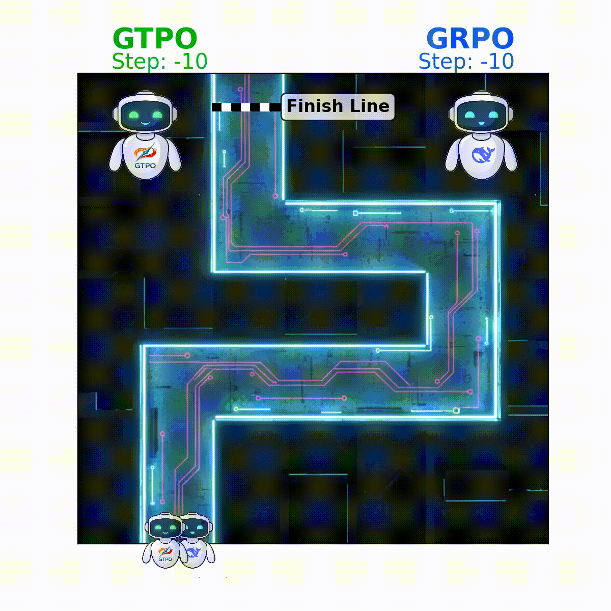
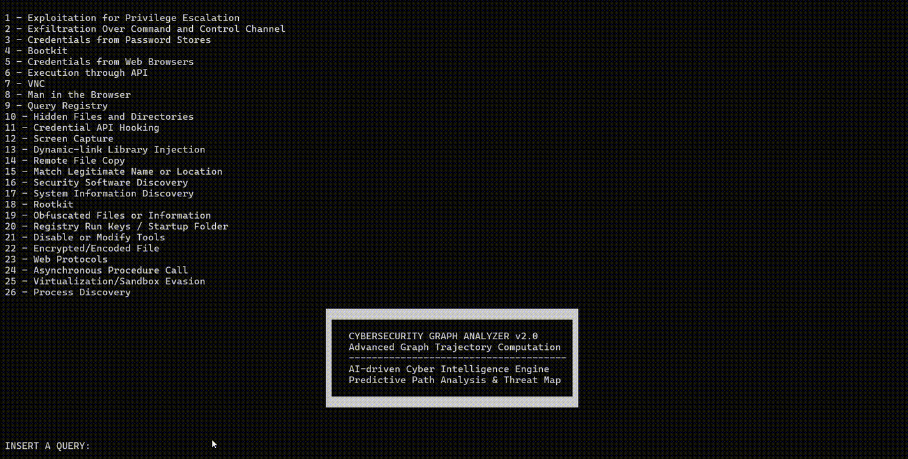
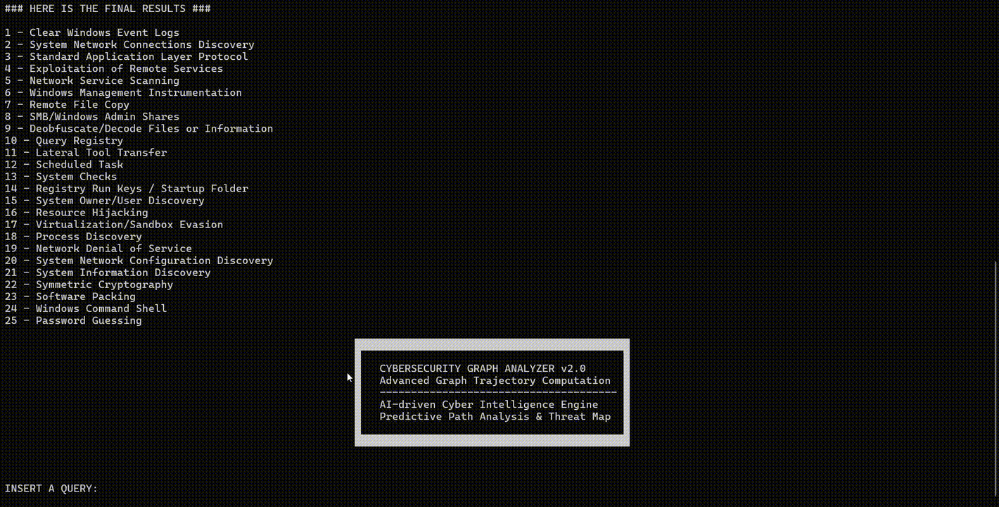
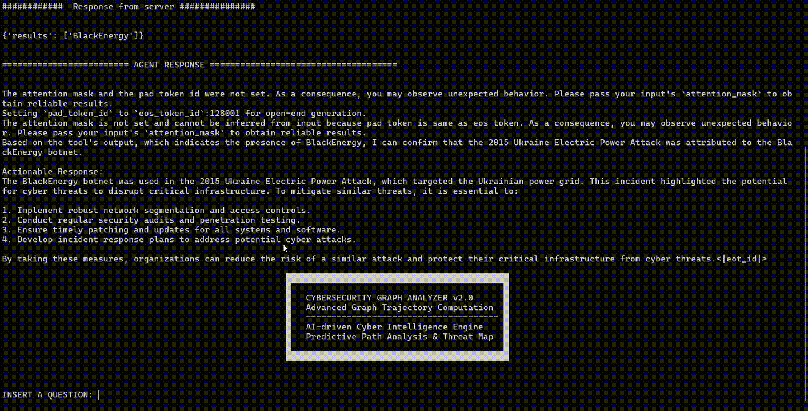

About Me
I am a researcher passionate about Large Language Models (LLMs) and their alignment through Reinforcement Learning (RL). My work explores how advanced RL techniques such as GRPO and GTPO can improve reasoning stability and trustworthiness in LLMs. While I have applied these methods to domains like cybersecurity, my main focus is on pushing the boundaries of AI alignment and building smarter, more reliable models.
Papers
Articles
GTPO vs GRPO: A Smarter Path to Stable Reasoning LLMs
In this piece I discuss the differences between GRPO and GTPO, two reinforcement learning approaches designed to stabilize and align large language models. Why is alignment crucial for reasoning? Because RL can make LLMs not only more powerful, but also more trustworthy.
REINFORCE vs. Posterior Token Targets: Two Paths to Steering Language Models
Sharing some brief notes I wrote for myself ... maybe useful for others too. 👉 Posterior: update = p - q (deterministic, low variance, compute-heavy). 👉 REINFORCE: update = -A(y)(e_y - p) (lightweight, scalable, noisy — matches q only in expectation).
Projects
GTPO: Group-relative Trajectory-Based Policy Optimization

This repository contains the official implementation of
GTPO (Group-relative Trajectory-based Policy Optimization),
a novel method for stable and effective policy optimization in Large Language Models (LLMs).
GTPO addresses key limitations of Group-relative Policy Optimization (GRPO), namely:
- Token-level gradient conflicts – where tokens shared across positively and negatively rewarded completions are inconsistently updated, often penalizing essential formatting tokens.
- Policy collapse – where negatively rewarded completions destabilize training, flattening the output distribution and degrading performance.
GTPO introduces conflict-aware gradient corrections and entropy-based regularization to mitigate these issues, ensuring more stable training without the need for KL-divergence regularization or a reference model.
📄 Paper:
GTPO: Trajectory-Based Policy Optimization in Large Language Models
💻 Code:
github.com/winstonsmith1897/GTPO
TITAN: Typed Bidirectional Knowledge Graph for CTI Reasoning
TITAN is a typed, bidirectional knowledge graph framework for Cyber Threat Intelligence (CTI) reasoning and question answering. It integrates data from the MITRE ATT&CK STIX bundles, builds a TITAN Ontology, generates reasoning (CoT) and non-reasoning (NoCoT) datasets, and provides an end-to-end pipeline for model training, evaluation, and graph execution.
🎬 Demos




Mixture of RAG Security Experts (MoRSE)
I introduce the first specialised AI chatbot for cybersecurity MoRSE (Mixture of RAGs Security Experts), which aims to provide comprehensive and complete knowledge about cybersecurity. MoRSE uses two Retrieval Augmented Generation (RAG) systems designed to provide clear, structured, and accurate answers to cybersecurity queries. Unlike traditional Large Language Models (LLMs) that rely on Parametric Knowledge Bases, MoRSE retrieves relevant documents from Non-Parametric Knowledge Bases in response to user queries. It then uses this information to generate accurate answers, improving cybersecurity accuracy and reliability. In addition, MoRSE benefits from real-time updates to its knowledge bases, enabling continuous knowledge enrichment without retraining.